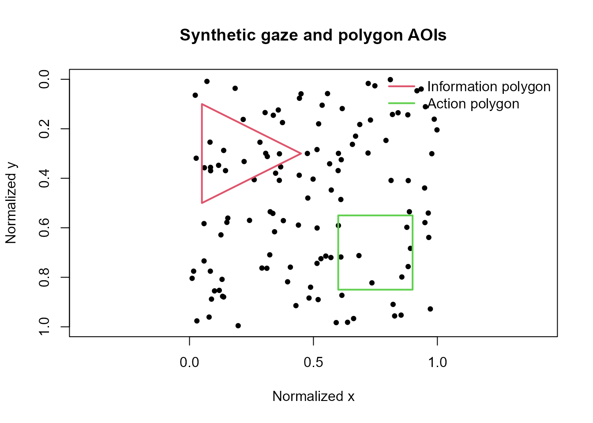

Advanced static and dynamic AOI assignment
Source:vignettes/articles/advanced-aoi-assignment.Rmd
advanced-aoi-assignment.RmdScope
This article demonstrates base-R assignment of gaze coordinates to non-rectangular and time-varying AOIs.
The helpers support:
- polygon AOIs defined by ordered vertices;
- rectangular or polygonal AOIs that change over time;
- participant- or trial-specific definitions;
- nearest, previous, or next definition-time matching;
- explicit overlap handling;
- coverage and definition-gap audits.
The resulting labels describe geometric membership only. They do not establish attention, comprehension, or psychological interpretation without additional design and measurement evidence.
Static polygon AOIs
Create two polygons: a triangular information region and a four-vertex action region.
polygon_vertices <- rbind(
data.frame(
aoi_name = "information",
vertex_order = 1:3,
vertex_x = c(0.05, 0.45, 0.05),
vertex_y = c(0.10, 0.30, 0.50)
),
data.frame(
aoi_name = "action",
vertex_order = 1:4,
vertex_x = c(0.60, 0.90, 0.90, 0.60),
vertex_y = c(0.55, 0.55, 0.85, 0.85)
)
)
polygon_vertices
#> aoi_name vertex_order vertex_x vertex_y
#> 1 information 1 0.05 0.10
#> 2 information 2 0.45 0.30
#> 3 information 3 0.05 0.50
#> 4 action 1 0.60 0.55
#> 5 action 2 0.90 0.55
#> 6 action 3 0.90 0.85
#> 7 action 4 0.60 0.85Synthetic gaze samples span both AOIs and the surrounding display.
set.seed(20260715)
static_gaze <- data.frame(
sample = seq_len(120),
x = stats::runif(120),
y = stats::runif(120),
stringsAsFactors = FALSE
)
static_assigned <- add_gazepoint_polygon_aoi(
master_df = static_gaze,
vertices = polygon_vertices,
x_col = "x",
y_col = "y",
vertex_order_col = "vertex_order",
output = "both",
label_col = "aoi_label"
)
table(static_assigned$aoi_label)
#>
#> action information outside
#> 8 12 100
plot(
static_gaze$x,
static_gaze$y,
asp = 1,
xlim = c(0, 1),
ylim = c(1, 0),
xlab = "Normalized x",
ylab = "Normalized y",
main = "Synthetic gaze and polygon AOIs",
pch = 19,
cex = 0.7
)
polygon(
polygon_vertices$vertex_x[
polygon_vertices$aoi_name == "information"
],
polygon_vertices$vertex_y[
polygon_vertices$aoi_name == "information"
],
border = 2,
lwd = 2
)
polygon(
polygon_vertices$vertex_x[
polygon_vertices$aoi_name == "action"
],
polygon_vertices$vertex_y[
polygon_vertices$aoi_name == "action"
],
border = 3,
lwd = 2
)
legend(
"topright",
legend = c("Information polygon", "Action polygon"),
lty = 1,
lwd = 2,
col = c(2, 3),
bty = "n"
)
Boundary points can be counted as inside or outside. When polygons
overlap, overlap = "first", "last", or
"error" makes the assignment rule explicit.
Time-varying rectangular AOIs
The following target moves horizontally across a synthetic display. Definitions are available every 250 ms.
definition_times <- seq(0, 2000, by = 250)
target_left <- 0.10 + 0.00025 * definition_times
dynamic_rectangles <- data.frame(
trial = "trial_01",
aoi_time = definition_times,
aoi_name = "moving_target",
left = target_left,
right = target_left + 0.20,
top = 0.35,
bottom = 0.65,
stringsAsFactors = FALSE
)
utils::head(dynamic_rectangles)
#> trial aoi_time aoi_name left right top bottom
#> 1 trial_01 0 moving_target 0.1000 0.3000 0.35 0.65
#> 2 trial_01 250 moving_target 0.1625 0.3625 0.35 0.65
#> 3 trial_01 500 moving_target 0.2250 0.4250 0.35 0.65
#> 4 trial_01 750 moving_target 0.2875 0.4875 0.35 0.65
#> 5 trial_01 1000 moving_target 0.3500 0.5500 0.35 0.65
#> 6 trial_01 1250 moving_target 0.4125 0.6125 0.35 0.65Synthetic gaze follows the target with small coordinate noise and includes several deliberately displaced samples.
sample_times <- seq(0, 2000, by = 20)
true_left <- 0.10 + 0.00025 * sample_times
dynamic_gaze <- data.frame(
trial = "trial_01",
time = sample_times,
x = true_left + 0.10 + stats::rnorm(
length(sample_times),
sd = 0.035
),
y = 0.50 + stats::rnorm(
length(sample_times),
sd = 0.035
),
stringsAsFactors = FALSE
)
dynamic_gaze$x[c(20, 60, 90)] <-
dynamic_gaze$x[c(20, 60, 90)] + 0.35Match each gaze sample to the nearest available AOI definition.
dynamic_assigned <- add_gazepoint_dynamic_aoi(
master_df = dynamic_gaze,
aoi_defs = dynamic_rectangles,
x_col = "x",
y_col = "y",
time_col = "time",
group_cols = "trial",
match = "nearest",
max_time_gap = 150,
output = "both",
label_col = "aoi_label"
)
table(dynamic_assigned$aoi_label, useNA = "ifany")
#>
#> moving_target outside
#> 98 3
plot(
dynamic_assigned$time,
dynamic_assigned$x,
type = "l",
xlab = "Time (ms)",
ylab = "Normalized x",
main = "Gaze relative to a moving rectangular AOI"
)
lines(
dynamic_rectangles$aoi_time,
dynamic_rectangles$left,
lty = 2
)
lines(
dynamic_rectangles$aoi_time,
dynamic_rectangles$right,
lty = 2
)
points(
dynamic_assigned$time[
dynamic_assigned$aoi_label == "moving_target"
],
dynamic_assigned$x[
dynamic_assigned$aoi_label == "moving_target"
],
pch = 19,
cex = 0.55
)
legend(
"topleft",
legend = c("Gaze x", "AOI bounds", "Inside matched AOI"),
lty = c(1, 2, NA),
pch = c(NA, NA, 19),
bty = "n"
)match = "previous" is useful when each definition
remains valid until the next update. match = "next"
supports designs where definitions describe the next known frame.
max_time_gap prevents distant definitions from being
applied silently.
Dynamic polygon AOIs
Dynamic polygons use repeated vertex rows at each definition time.
dynamic_polygons <- do.call(
rbind,
lapply(
c(0, 1000),
function(definition_time) {
offset <- definition_time / 2000
data.frame(
trial = "trial_01",
aoi_time = definition_time,
aoi_name = "moving_polygon",
vertex_order = 1:4,
vertex_x = offset + c(0, 0.25, 0.25, 0),
vertex_y = c(0.10, 0.10, 0.35, 0.35),
stringsAsFactors = FALSE
)
}
)
)
dynamic_polygons
#> trial aoi_time aoi_name vertex_order vertex_x vertex_y
#> 1 trial_01 0 moving_polygon 1 0.00 0.10
#> 2 trial_01 0 moving_polygon 2 0.25 0.10
#> 3 trial_01 0 moving_polygon 3 0.25 0.35
#> 4 trial_01 0 moving_polygon 4 0.00 0.35
#> 5 trial_01 1000 moving_polygon 1 0.50 0.10
#> 6 trial_01 1000 moving_polygon 2 0.75 0.10
#> 7 trial_01 1000 moving_polygon 3 0.75 0.35
#> 8 trial_01 1000 moving_polygon 4 0.50 0.35The same add_gazepoint_dynamic_aoi() interface is used
with shape = "polygon" and the vertex columns.
Coverage audit
Audit whether samples had a usable definition, how large matching gaps were, and whether coordinates fell inside or outside all AOIs.
coverage_audit <- audit_gazepoint_dynamic_aoi_coverage(
dynamic_assigned,
label_col = "aoi_label",
group_cols = "trial",
max_time_gap = 100,
x_col = "x",
y_col = "y"
)
coverage_audit$overview
#> n_rows n_with_definition pct_with_definition n_inside_aoi pct_inside_aoi
#> 1 101 101 100 98 97.0297
#> n_outside_aoi pct_outside_aoi n_missing_gaze n_excessive_gap mean_time_gap
#> 1 3 2.970297 0 16 61.78218
#> max_time_gap_observed audit_status
#> 1 120 review
coverage_audit$group_summary
#> trial n_rows n_with_definition pct_with_definition n_inside_aoi
#> 1 trial_01 101 101 100 98
#> pct_inside_aoi n_outside_aoi n_missing_gaze n_excessive_gap mean_time_gap
#> 1 97.0297 3 0 16 61.78218
coverage_audit$aoi_summary
#> aoi n_samples pct_all_samples pct_defined_samples
#> 1 moving_target 98 97.0297 97.0297
utils::head(coverage_audit$flagged_rows)
#> trial time x y aoi_moving_target aoi_label
#> 7 trial_01 120 0.2280927 0.5022645 TRUE moving_target
#> 8 trial_01 140 0.2775847 0.4645416 TRUE moving_target
#> 19 trial_01 360 0.2389342 0.5166784 TRUE moving_target
#> 20 trial_01 380 0.7083769 0.4502671 FALSE outside
#> 32 trial_01 620 0.3575538 0.4999766 TRUE moving_target
#> 33 trial_01 640 0.4518490 0.4800465 TRUE moving_target
#> aoi_overlap_count aoi_definition_time aoi_time_gap
#> 7 1 0 120
#> 8 1 250 110
#> 19 1 250 110
#> 20 0 500 120
#> 32 1 500 120
#> 33 1 750 110
#> dynamic_aoi_issue
#> 7 definition_gap_exceeds_threshold
#> 8 definition_gap_exceeds_threshold
#> 19 definition_gap_exceeds_threshold
#> 20 definition_gap_exceeds_threshold
#> 32 definition_gap_exceeds_threshold
#> 33 definition_gap_exceeds_thresholdA "review" status identifies missing gaze, unavailable
definitions, excessive definition-time gaps, or samples outside all
AOIs. Outside-AOI samples are not automatically invalid; their relevance
depends on the stimulus and analysis plan.
Recommended reporting
Report:
- coordinate system and screen normalization;
- polygon vertex ordering or rectangle bounds;
- AOI-definition update frequency;
- participant/trial grouping;
- definition-time matching rule;
- maximum permitted matching gap;
- boundary and overlap rules;
- percentage of samples with definitions;
- inside-, outside-, and missing-gaze proportions.
These details make dynamic AOI assignment auditable and reproducible.